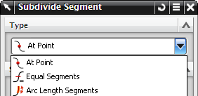
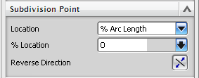

细分段选项
类型

您可从类型列表中选择四个不同的选项来细分一个管线布置线段。管线控制点将会根据您使用的类型来放置在您使用的线段上。
在点上
此方法为默认方法。它允许您使用屏幕拾取的点来放置管线控制点，然后您可以使用再分割点组中的选项来调节新的管线控制点位置，您也可以沿着线段拖动点。
等分段
将线段分割成为相等弧长的几段。
弧长段数
指定线段要进行分割的起始和终止百分比，您可以进行屏幕拾取或者输入文本，再然后输入在指定起点和终点之间想要的线段的数量。您还需要为新的管线控制点指定一个弧长，来计算从起始点的增量。放置将会在线段数量或者终止的百分比满足使结束，无论哪一个首先发生。您可以通过定义很大数量的线段数目来强迫后者的行为，在起点和终点直接的拆分线段的正确数量，将会在点击应用或确定后反映在段数输入框中。
|
注释 |
屏幕拾取即如果控制点在选择球范围内，则捕捉路径线段上的控制点位置，否则，将使用距离光标最近的线段上的位置。您也可以通过选择另外一个对象来指明该位置，NX 将把其它对象的屏幕拾取位置投影到管线段上。 |
再分割点
当您在类型列表中选择在点上时，再分割点组将变为可用。

在位置列表中，您可以选择：
-
弧长百分比 – 将会在弧长百分比的位置分割管线段。
-
通过点 – 将会在用户指定点处把线段细分。
反向  将更改再分割点的测量终点。
将更改再分割点的测量终点。